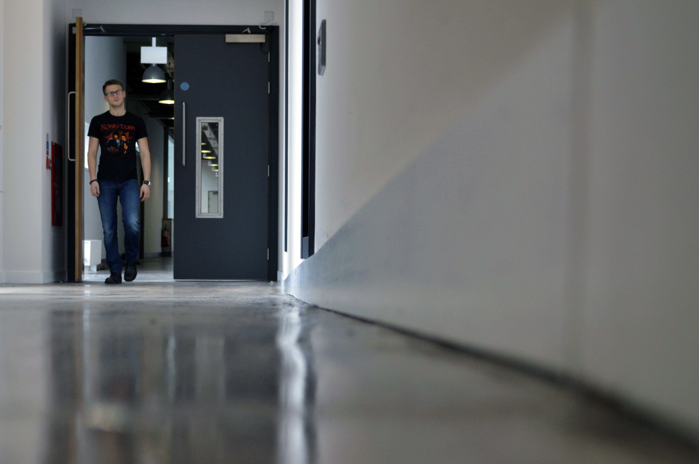

Macro Photo No. 1

This photo is an exploration of composition at a macro level within the University of Ulster Belfast campus. I was also interested in the slight reflection in the newly polished floor and originally intended for the shot just to incude the building and not have a subject walking through the shot, however it was purely by chance that someone happened to walk through the door at the moment I was taking the photo.
I think by choosing to keep the photo with a person included in the imagery, I changed it's meaning slightly and shifting the focus of the shot from the building itself to the experiences of the people who study there.